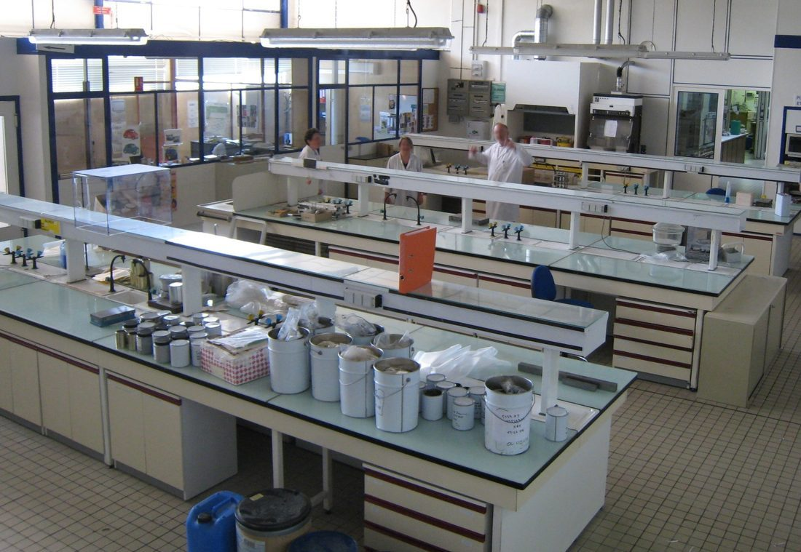
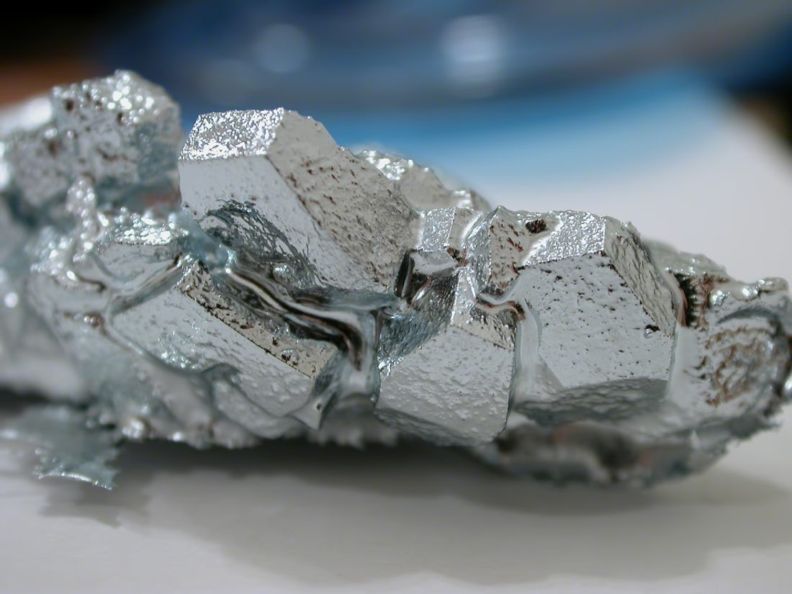
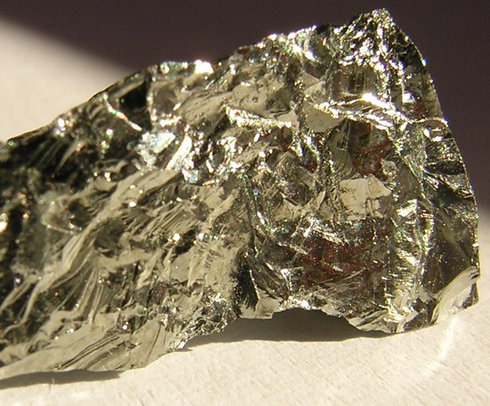
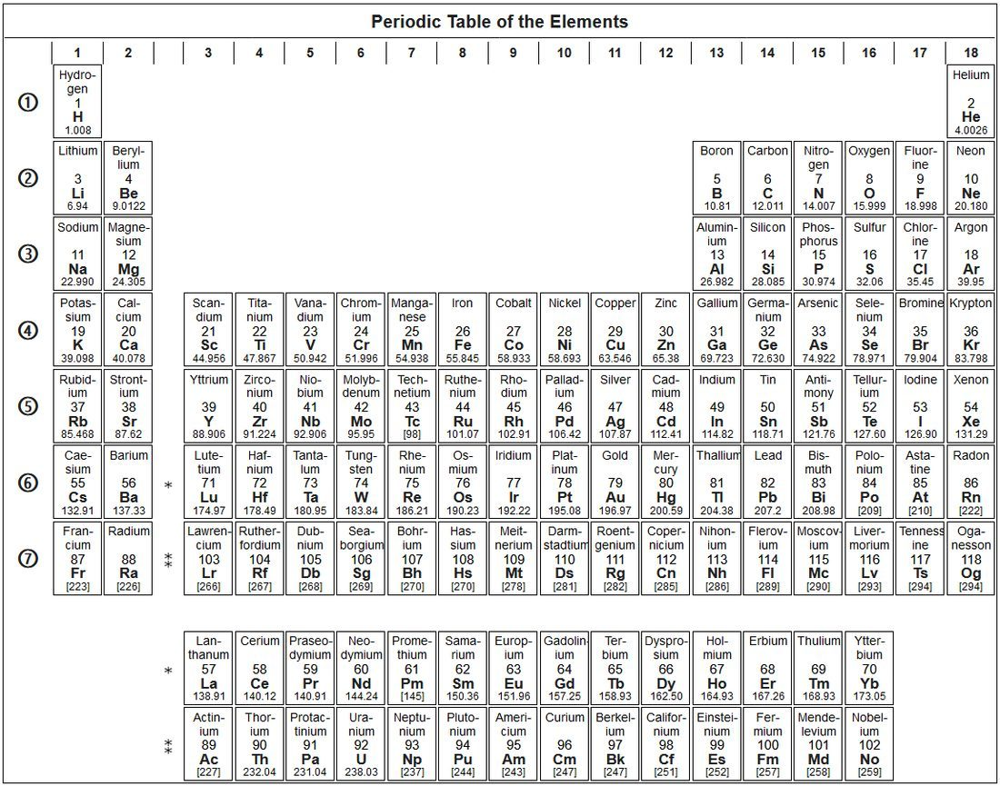

1834
生于西伯利亚

2 月 8 日，德米特里·门捷列夫出生。少年丧父，靠母亲坚毅支撑读完学业。
1850
赴圣彼得堡求学
他到圣彼得堡攻读化学，展现出过人的整理与概括能力。
1860
钻研化学体系

他在教学与研究中，越来越不满意元素之间的零散关系，开始寻找统一秩序。
1869
第一张周期表
他发表元素周期表，按原子量排列并让同族元素同列，第一次让性质呈现周期规律。
1871
留白与预言
他完善周期表并大胆留出空格，预言多种未发现元素及其性质。
1875
镓被发现

布瓦博德朗发现镓，性质与“类铝”高度吻合，预言首次应验。
1886
锗被发现

锗被发现，几乎完全符合“类硅”的预言，周期表可信度大增。
1894
稀有气体登场

氩等稀有气体被发现，单独成最右一列，进一步印证周期律的完备。
1900
周期表进入精细打磨期
周期表进入精细打磨期。可惜门捷列夫 1907 年去世，没能等到 1913 年莫塞莱用原子序数给出更深的依据。
1907
逝于圣彼得堡
2 月 2 日，门捷列夫逝世。他留下的表，至今仍是化学的基石。